CLB Cụm Học Thuật
CLB Kế toán Kiểm toán (AAC)
Nơi chào đón những bạn sinh viên có niềm yêu thích với chuyên ngành kế toán kiểm toán, tạo môi trường cho các bạn giao lưu, chia sẻ kinh nghiệm.
Facebook: AAC - CLB Kế Toán Kiểm Toán - Học viện Ngân Hàng 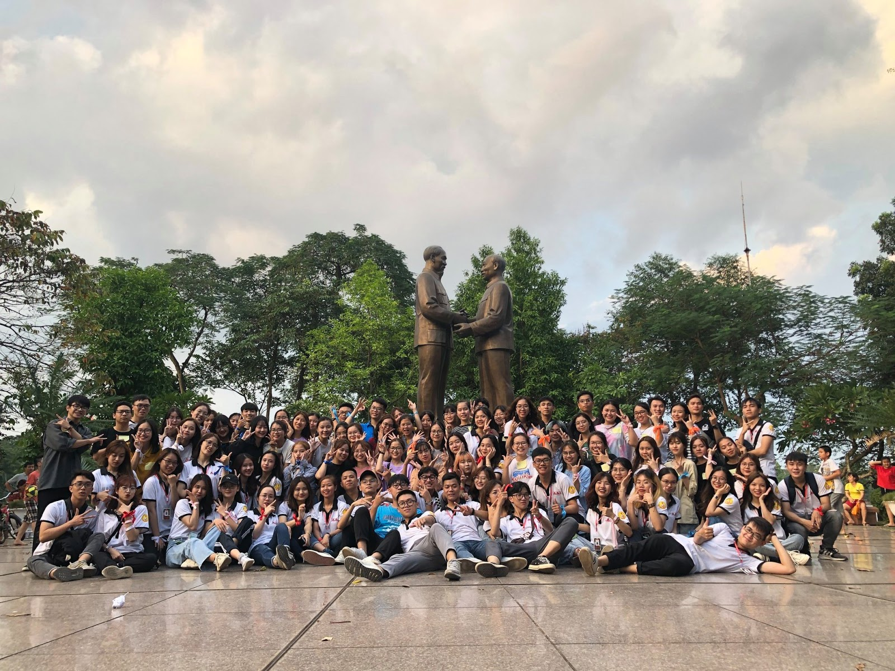CLB Kinh doanh quốc tế (IBC)
CLB được thành lập với mục đích giúp các thành viên học hỏi, trau dồi hiểu biết về kinh tế, ngày một hội nhập với Thế giới.
Facebook: IBC - CLB Kinh doanh Quốc tế Học viện Ngân Hàng 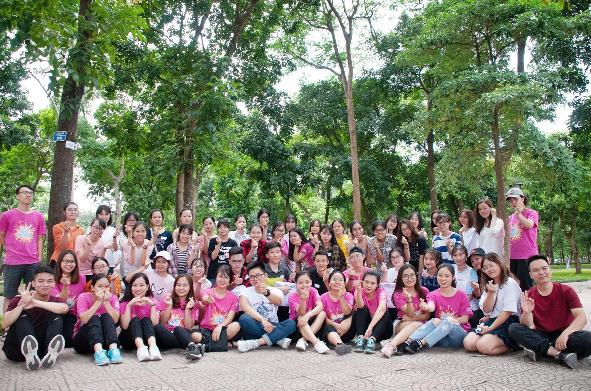CLB Tin học ngân hàng (BIT)
Điểm đến của những bạn có đam mê với Baking và IT.
Facebook: CLB Tin học ngân hàng BIT - BAV 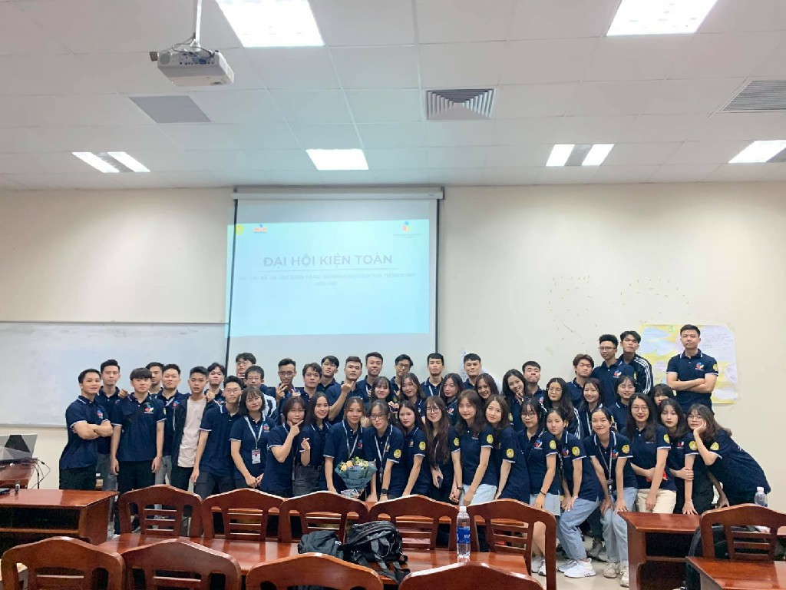CLB Chứng khoán (SEC)
Nơi kết nối các bạn sinh viên yêu thích chứng khoán đến từ các trường khối Kinh tế, cùng nhau phát triển kỹ năng giao tiếp, văn hóa kinh doanh, làm việc nhóm,...
Facebook: CLB Chứng khoán SEC - Học viện Ngân hàng 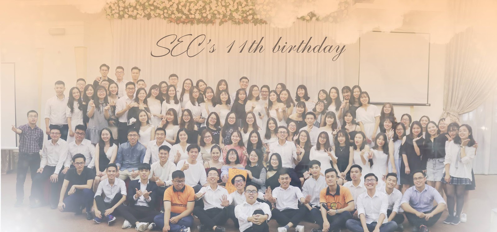CLB Nghiên cứu khoa học (SRC)
CLB thúc đẩy phong trào học tập, nghiên cứu. Bên cạnh đó, SRC chú trọng phát triển thành viên, bồi dưỡng kiến thức về Kinh tế, Xã hội, Tài chính - Ngân hàng, rèn luyện kỹ năng thực hành và kỹ năng mềm.
Facebook: CLB Sinh viên Nghiên cứu khoa học - Học viện Ngân hàng 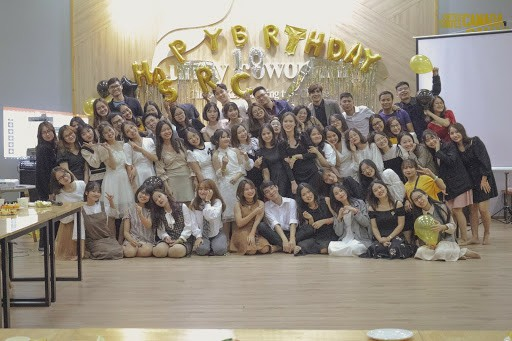CLB Luật gia tương lai (FJC)
Là một CLB Học Thuật, FJC là nơi các sinh viên đam mê ngành Luật có cơ hội trau dồi kiến thức và kinh nghiệm đời sống liên quan đến chuyên ngành.
Facebook: CLB Luật gia tương lai FJC - HVNH 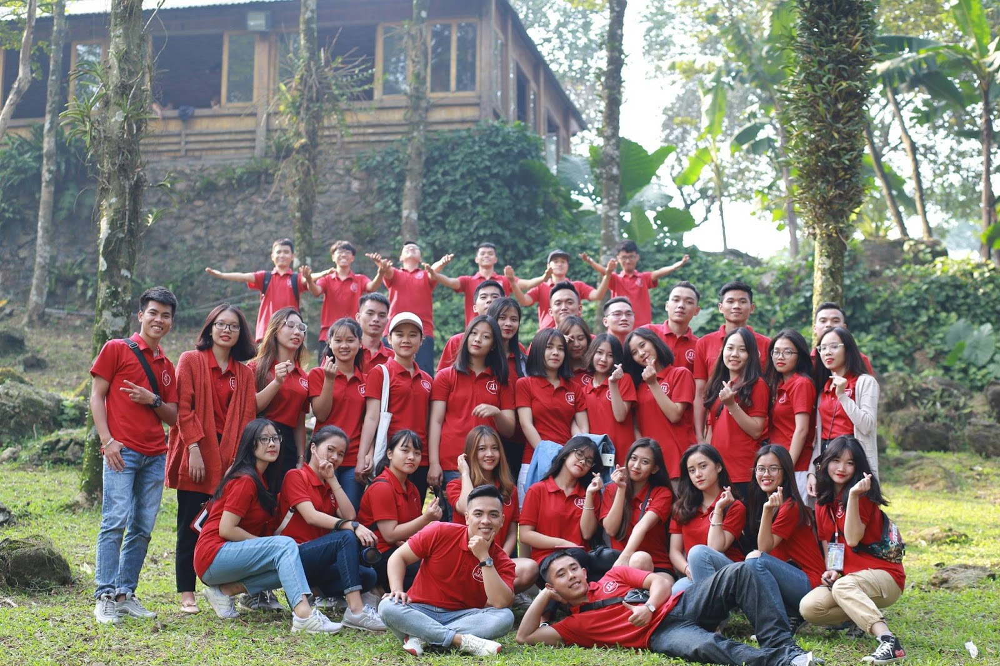CLB Nhà Kinh tế trẻ (YEC)
Nơi tụ họp những sinh viên có niềm đam mê mãnh liệt với Kinh tế.
Facebook: CLB Nhà Kinh Tế Trẻ - YEC - Học viện Ngân hàng 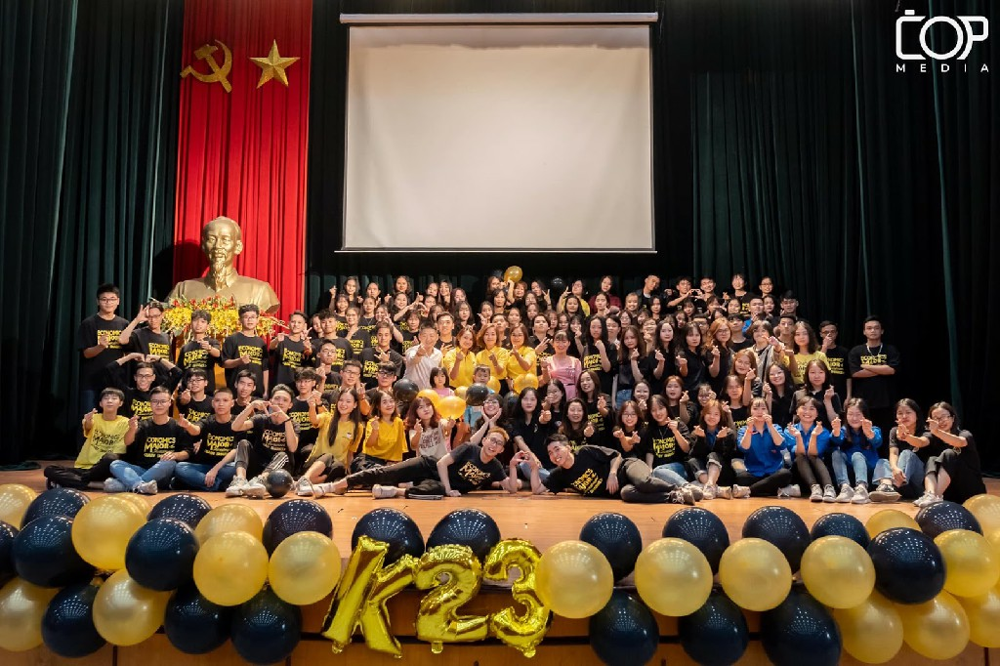CLB Cụm Tình nguyện - Sở thích
Đội Văn nghệ (BAAT)
Với 4 nhóm lớn: Hát, Múa, Nhảy và Quản lý - Tổ chức, Đội Văn nghệ là nơi giúp các bạn có niềm yêu thích nghệ thuật và ánh đèn sân khấu có cơ hội đang thể hiện bản thân và cháy hết mình với đam mê.
Facebook: BAAT - Đội Văn nghệ Học viện Ngân Hàng 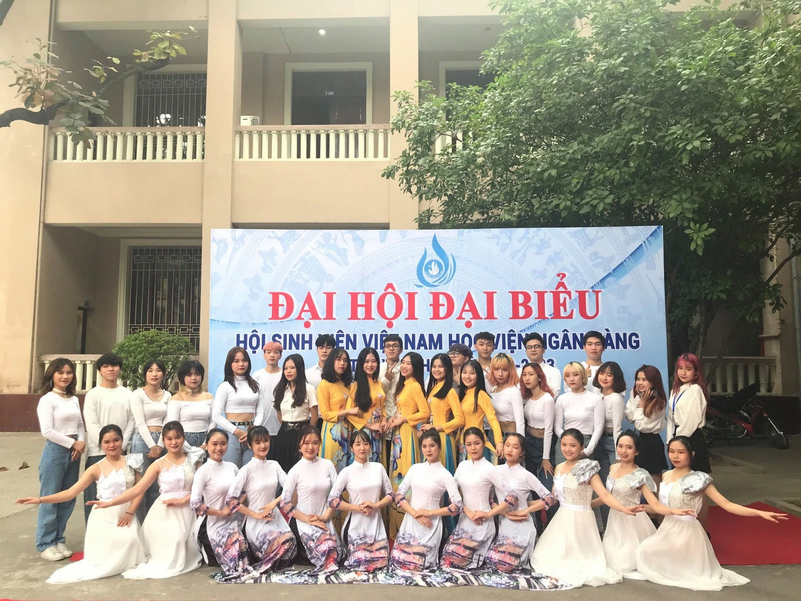Đội Bóng đá (BAFT)
Nơi các bạn sinh viên đam mê bóng đá trao đổi và giao lưu về bộ môn này.
Facebook: BAFT - Đội Bóng đá Học viện Ngân hàng 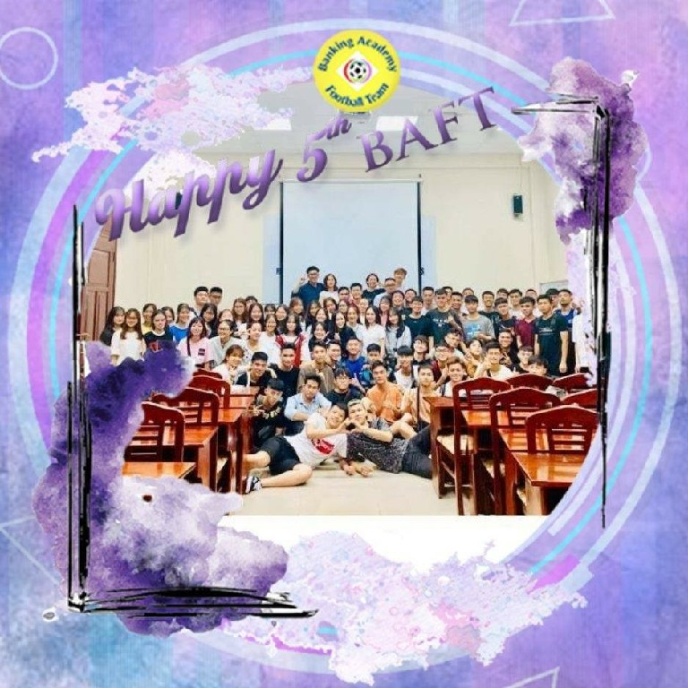Đội Sinh viên tình nguyện (BAVT)
Một số hoạt động chính của Đội: Tiếp sức mùa thi, Phân làn giao thông, Đi đến các trung tâm, làng trẻ,... Đây chính là nơi mà các bạn sinh viên được thể hiện sự yêu thích làm việc giúp ích xã hội và cộng đồng.
Facebook: BAVT - Đội SVTN Học viện Ngân hàng 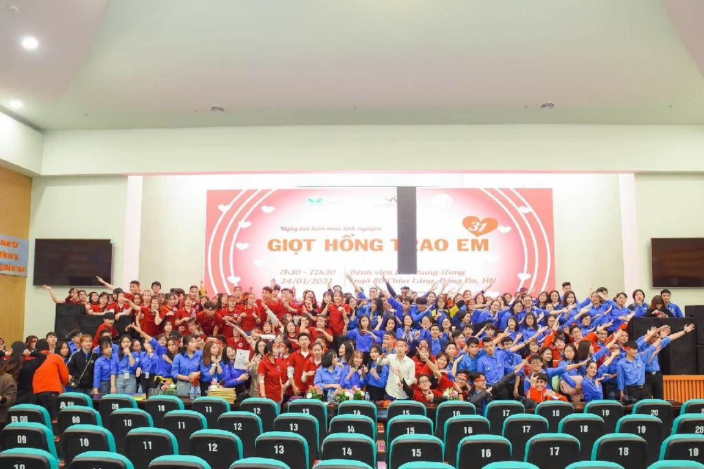CLB SVTN Vận động hiến máu (BBC)
CLB hoạt động chuyên sâu về vận động hiến máu. Với những nhiệm vụ và chỉ tiêu đặt ra, BBC luôn cố gắng xây dựng CLB ngày một lớn mạnh.
Facebook: CLB sinh viên tình nguyện vận động hiến máu Học viện Ngân hàng - BBC 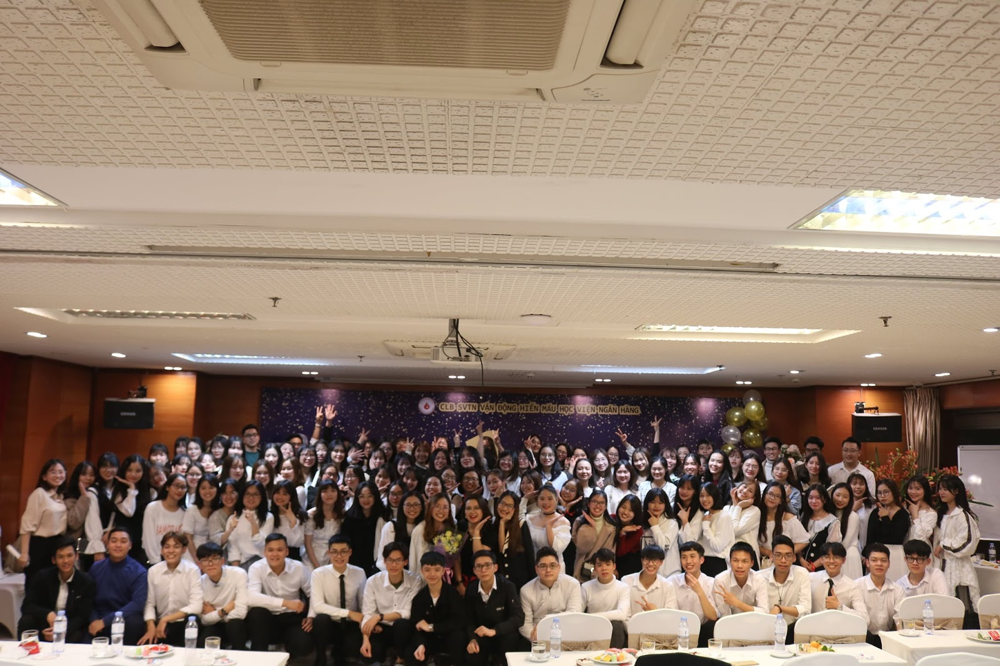CLB Taekwondo (BTC)
Bao gồm 3 phần võ thuật chính: Võ hiện đại, Võ thực chiến và Tự vệ, BTC kết hợp luyện tập kết hợp giữa cự ly xa, gần, là nơi tập hợp các bạn sinh viên yêu thích bộ môn Taekwondo, rèn thể chất cũng như học hỏi văn hóa môn phái..
Facebook: CLB Taekwondo HVNH 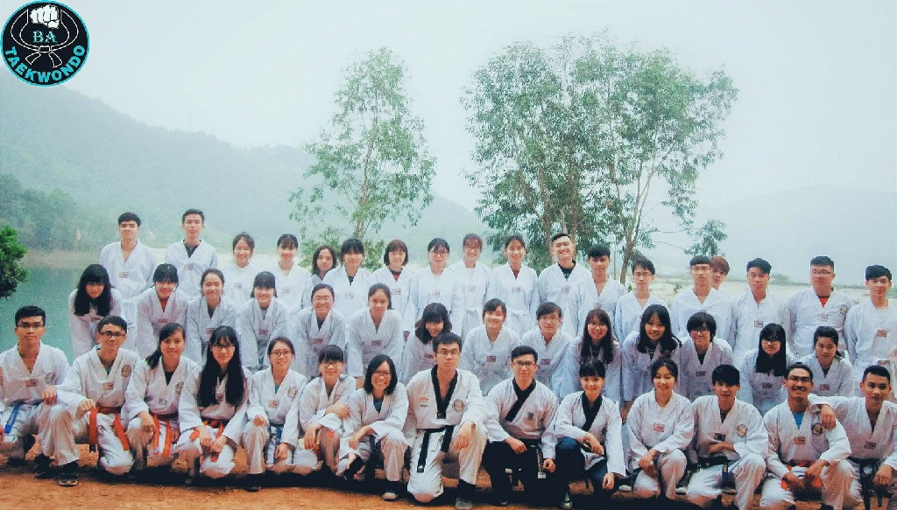CLB Karatedo (BKC)
CLB với ý tưởng “Mang Karatedo từ Nhật Bản đến với cuộc sống các bạn trẻ Việt Nam” thu hút rất nhiều bạn sinh viên trong và ngoài trường dù mới được thành lập đó nha.
Facebook: Clb Karatedo Học Viện Ngân Hàng 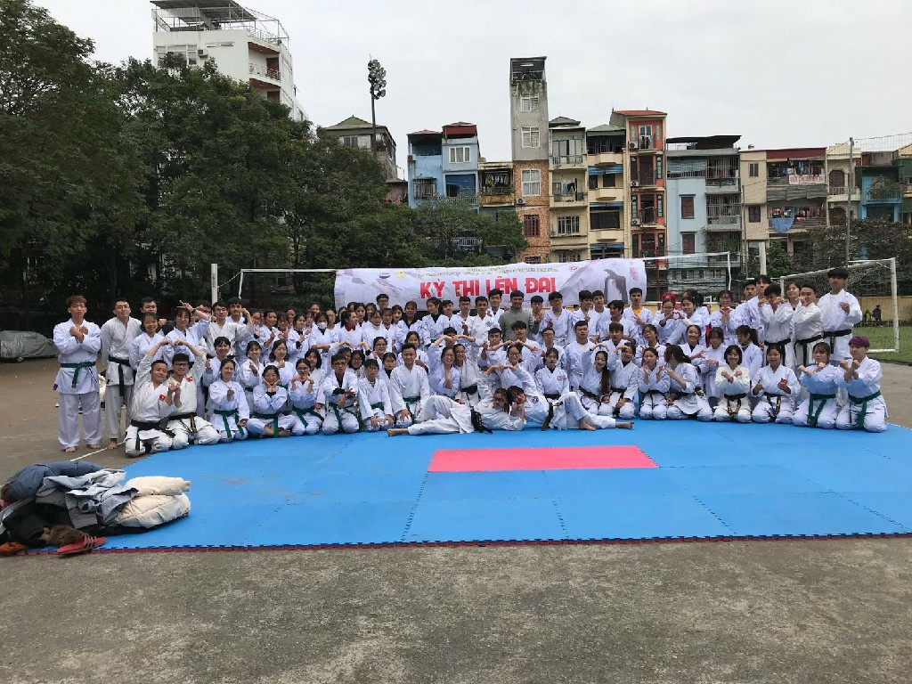CLB Guitar (GBA)
Với 3 ban: Chuyên môn, Hát, Sự kiện thì GBA là nơi tụ họp của những bạn sinh viên muốn được hòa nhập, thể hiện bản thân với sự sôi nổi của CLB.
Facebook: CLB Guitar HVNH - GBA 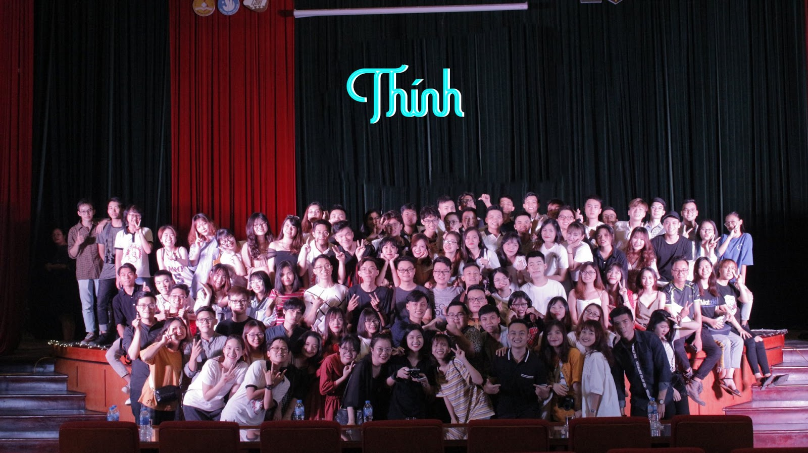CLB Người dẫn chương trình (MCC)
Nếu bạn có đam mê dẫn chương trình, muốn được tự tin đứng trên sân khấu thì đây chính là nơi vô cùng phù hợp dành cho bạn.
Facebook: MCC - Câu lạc bộ MC Học viện Ngân hàng 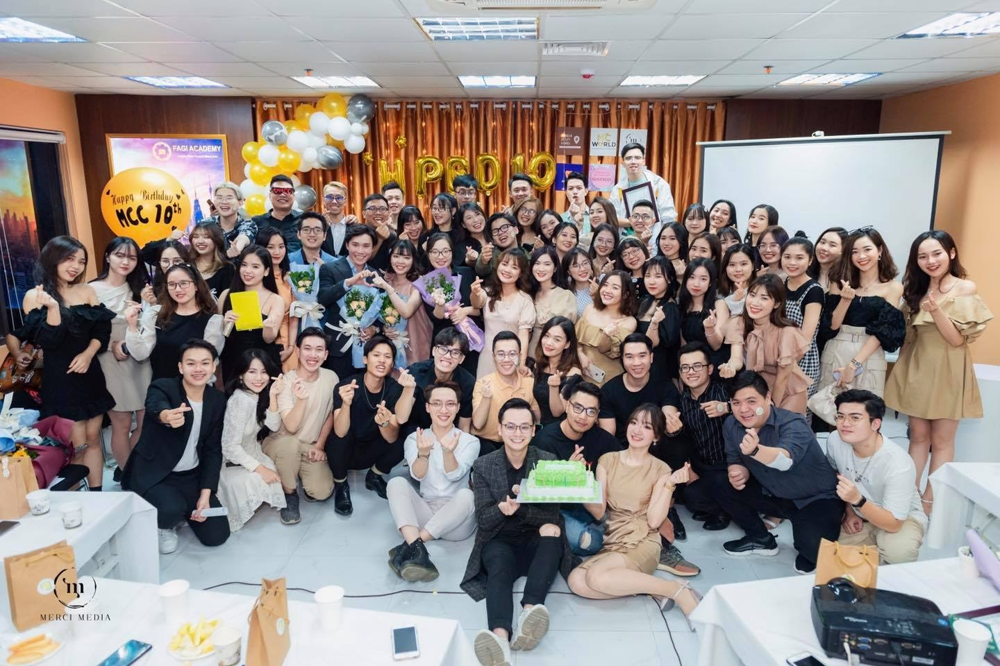CLB Thủ lĩnh đoàn (TLĐ)
CLB được thành lập với mục đích hỗ trợ và thúc đẩy Đoàn thể trong sinh viên. Sau hơn 2 năm thành lập, tích lũy được kinh nghiệm thì CLB đã chính thức trở thành Đội hỗ trợ chính thống của Đoàn thành niên HVNH.
Facebook: Đội Thủ lĩnh Đoàn - Học viện Ngân hàng 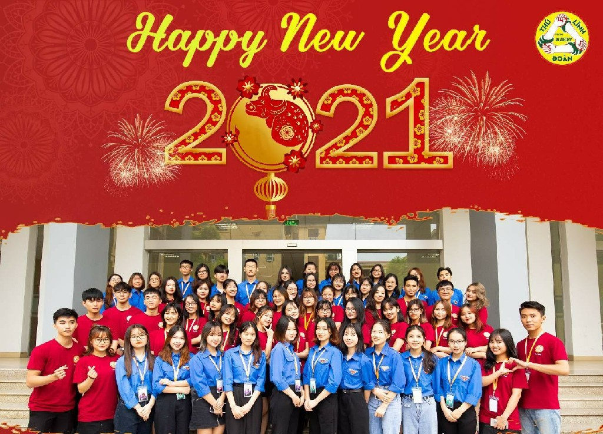CLB Sách (BBA)
Bên cạnh việc giao lưu học hỏi kinh nghiệm liên quan đến sách thì CLB còn có một số hoạt động thú vị khác trong cộng đồng.
Facebook: CLB Sách HVNH - BBA 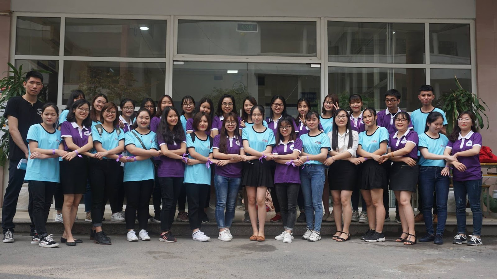Đội nghi lễ
Là điểm đến của các cô gái dịu dàng, năng động. Khi là thành viên của Đội, các bạn có cơ hội được trau dồi kỹ năng giao tiếp, ứng xử, giao lưu kết bạn đồng thời được tham gia các sự kiện thỏa mãn đam mê.
Facebook: Đội nghi lễ Học viện Ngân hàng 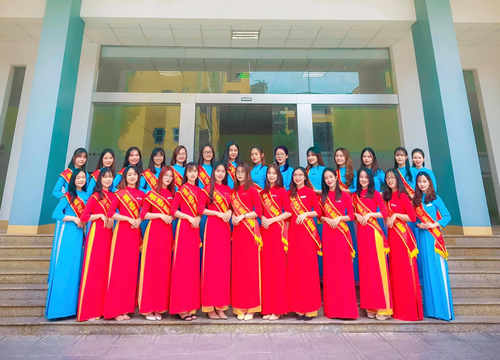CLB Cụm kỹ năng
CLB Kỹ năng kinh doanh (BSC)
Với slogan “You can if you think you can” - “Bạn có thể nếu bạn nghĩ rằng bạn có thể”, BSC là nơi giúp các thành viên giao lưu, học hỏi kỹ năng và cùng nhau cháy với đam mê của bản thân.
Facebook: CLB Kỹ Năng Kinh Doanh - Business Skill Club (BSC) - Học Viện Ngân Hàng 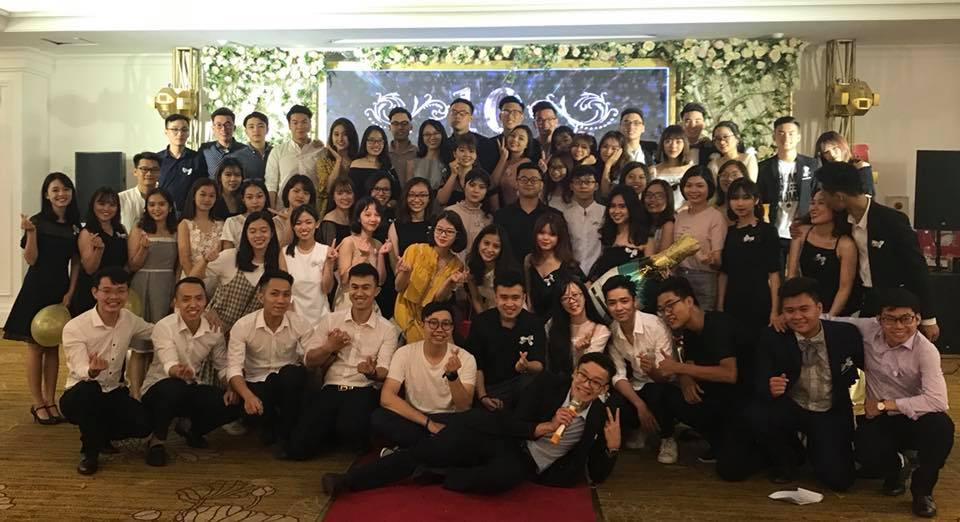CLB Ngân hàng và nguồn nhân lực (UBC)
Nếu bạn là một sinh viên có đam mê với ngân hàng thì UBC chính là điểm đến bạn không nên bỏ qua. CLB không chỉ là nơi trau dồi cho bạn kiến thức chuyên môn mà còn những kỹ năng cần thiết cho ngành nghề này với những trải nghiệm thực tế nhất.
Facebook: CLB Ngân hàng và Nguồn nhân lực - UBC 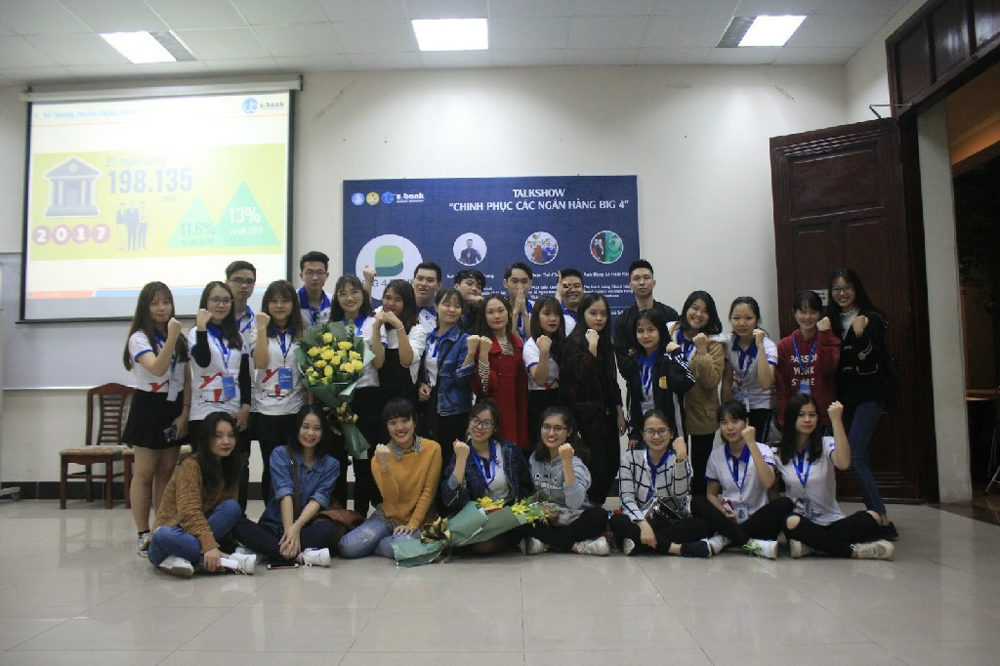CLB Hướng nghiệp quốc tế (iCareer)
Với đúng tên gọi thì CLB là nơi đồng hành cùng sinh viên tìm kiếm sự đam mê và thành công trên con đường đã chọn.
Facebook: iCareer - CLB Hướng nghiệp Quốc tế - HVNH 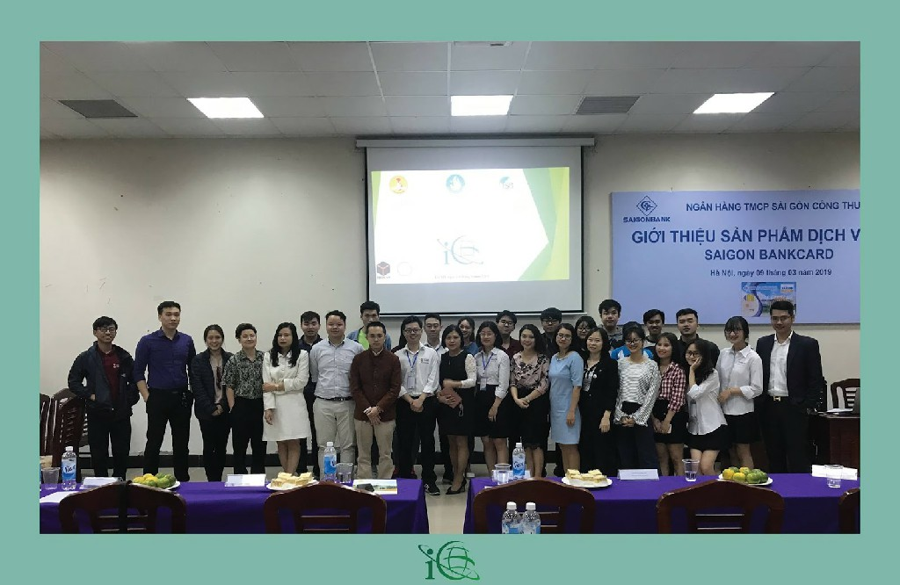CLB Thuyết trình (SCBA)
CLB có 5 hoạt động: chuyên môn, kinh doanh, xã hội - từ thiện, văn hóa, truyền thông cùng với 5 giá trị là tôn trọng, thân thiện, đoàn kết, xây dựng, phát triển hứa hẹn đem đến môi trường năng động, tích cực đến cho các thành viên.
Facebook: SCBA - CLB Thuyết trình Học viện Ngân hàng 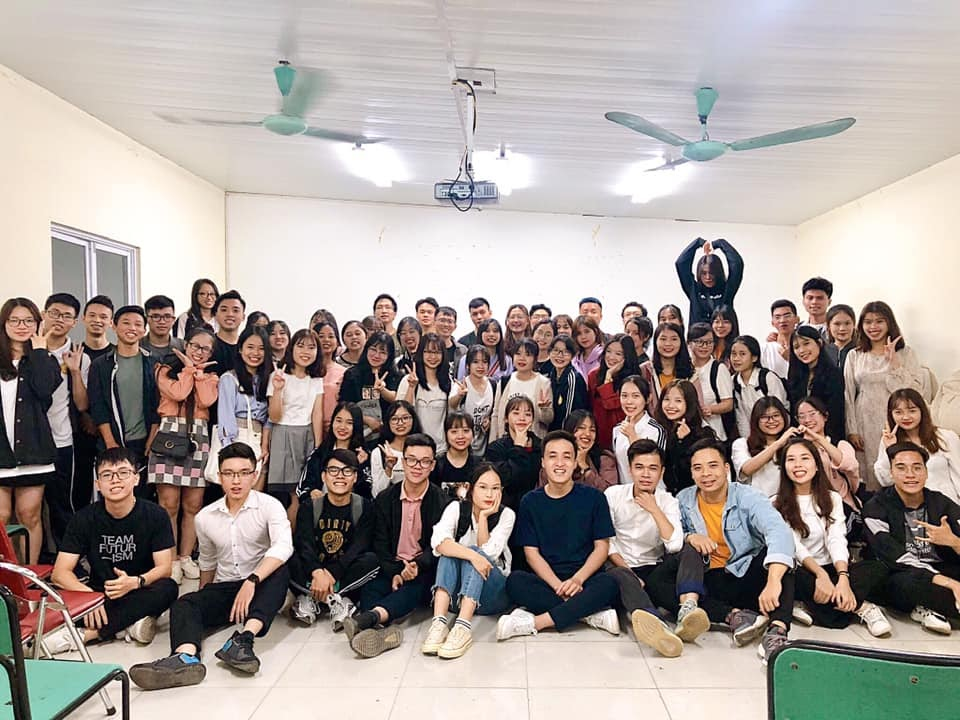CLB Truyền thông SMC (trực thuộc Ban Truyền thông HV)
Cùng những chỉ tiêu và sứ mệnh đề ra, SMC chính là nơi dành cho các bạn sinh viên mong muốn được trau dồi kinh nghiệm sáng tạo, nhạy bén trong công việc.
Facebook: CLB Truyền thông Học viện Ngân hàng 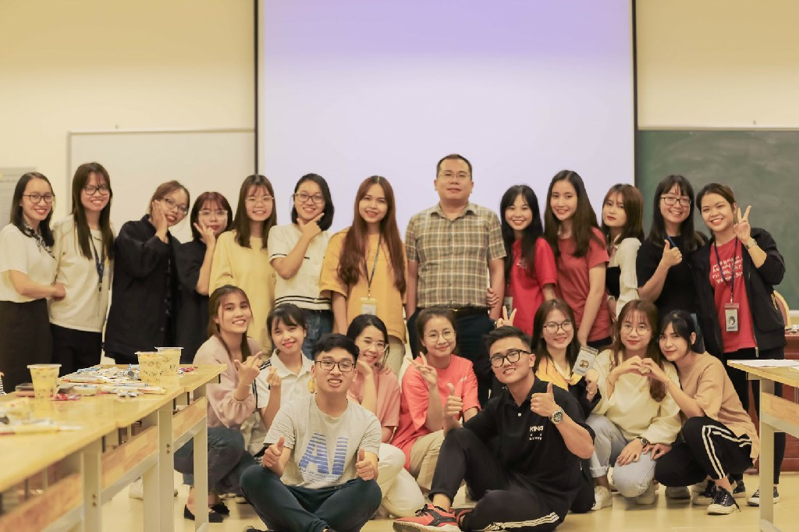CLB Cố vấn học tập (ACC)
Với những hoạt động hỗ trợ sinh viên như: tư vấn đăng ký học, tư vấn phương pháp học hiệu quả, tư vấn tâm lý và các vấn đề nhà ở, đi lại,... ACC được rất nhiều bạn tìm đến với mong muốn được làm thành viên cũng như tìm sự giúp đỡ tận tình từ những sinh viên có kinh nghiệm.
Facebook: ACC - CLB Cố Vấn Học Tập - HVNH 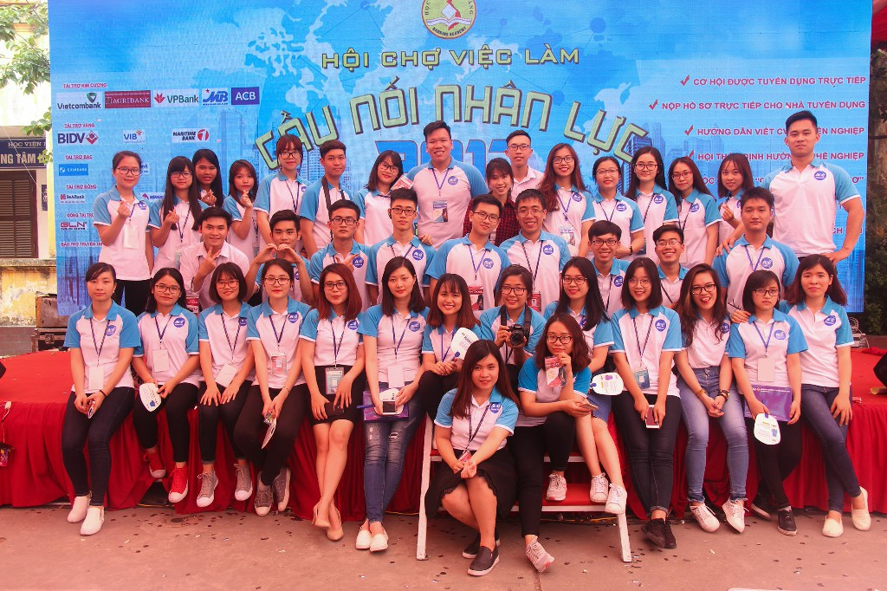COP - CLB Nhiếp ảnh
Với phương châm “Live For Passion” thì COP chính là điểm đến không thể bỏ qua dành cho những bạn có mong muốn được cháy hết mình với đam mê và vượt qua chính mình.
Facebook: COP Media 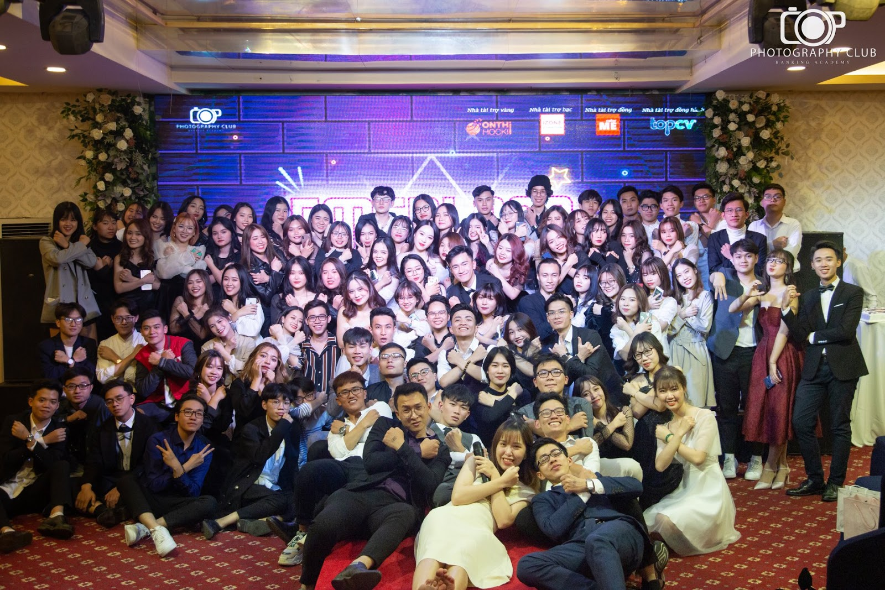CLB Cụm Liên Chi Đội
Khoa Ngân Hàng
Là khoa lớn nhất của Học Viện, Khoa Ngân Hàng với bề dày kinh nghiệm hứa hẹn đem đến môi trường học tập cũng như làm việc năng động, chuyên nghiệp.
Facebook: Khoa Ngân hàng Học viện Ngân hàng 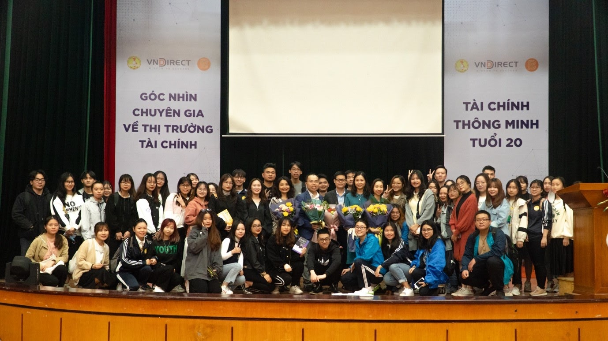Khoa Tài Chính
Nhiệm vụ chính của Khoa là đào tạo trình độ đại học, sau đại học và nghiên cứu khoa học 5 lĩnh vực chuyên sâu: Quản lý tài chính, Định giá tài sản, Mua bán và sáp nhập doanh nghiệp, Kinh doanh chứng khoán, Thuế và tài chính công.
Facebook: Khoa Tài chính Học viện Ngân hàng 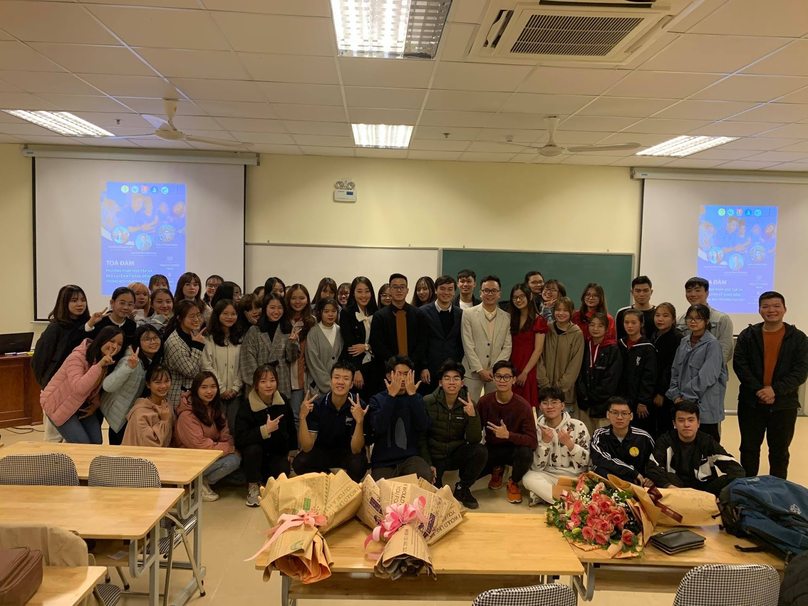Khoa Kế toán - Kiểm toán
Là một trong hai khoa có lịch sử phát triển lâu năm nhất, đã và đang cung cấp các chương trình đào tạo: Kế toán tài chính áp dụng cho doanh nghiệp Công nghiệp, thương nghiệp, dịch vụ, xây dựng cơ bản; kế toán công; kế toán trong các tổ chức tài chính - tín dụng,...
Facebook: Khoa Kế toán - Kiểm toán, Học viện Ngân hàng 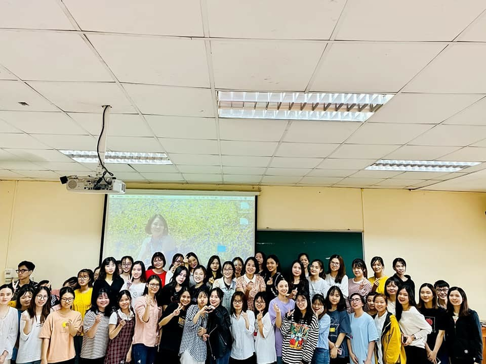Khoa Quản Trị Kinh Doanh
Nơi nghiên cứu và đào tạo chuyên sâu về chuyên ngành đồng thời giao lưu, chia sẻ những kinh nghiệm, cùng nhau phát triển.
Facebook: Khoa Quản trị kinh doanh - Học Viện Ngân Hàng 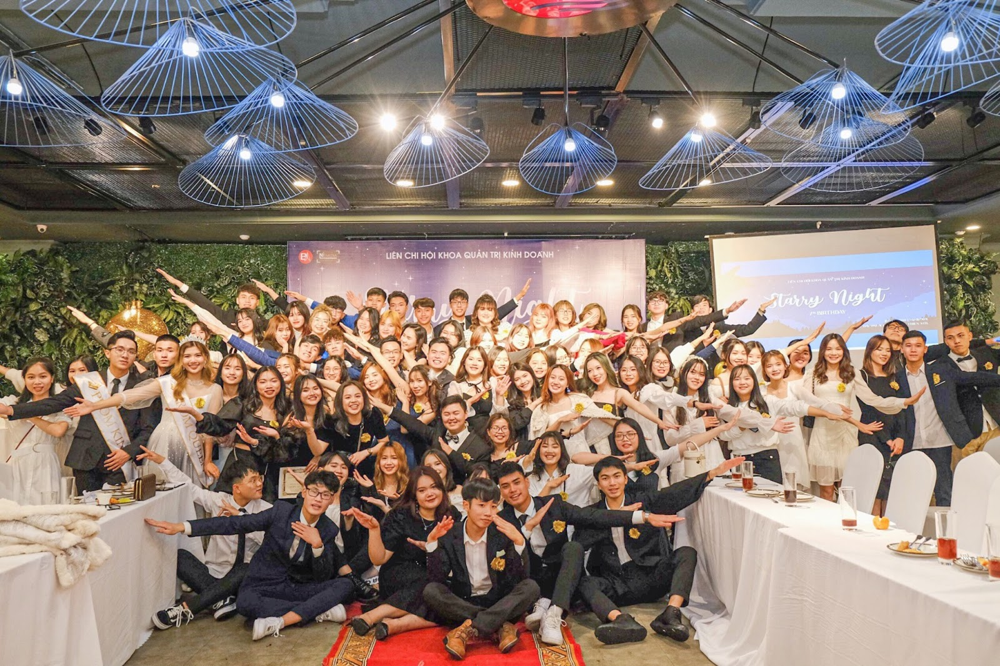Khoa Kinh Doanh Quốc tế
"We are young, dynamic, creative and talented! Join us and be ready to shine!” là những gì mà các thành viên Khoa Kinh Doanh Quốc Tế muốn gửi tới các bạn sinh viên vẫn còn đang phân vân đăng ký tham gia.
Facebook: Khoa Kinh doanh Quốc tế - Học viện Ngân Hàng 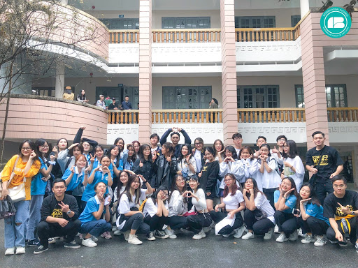Khoa Luật
Nơi dành cho những bạn sinh viên yêu thích Luật và giao lưu học hỏi với các bạn có cùng sở thích, có cơ hội cùng nhau rèn luyện phát triển trình độ chuyên ngành cũng như các kỹ năng mềm khác.
Facebook: Khoa Luật - Học viện Ngân hàng 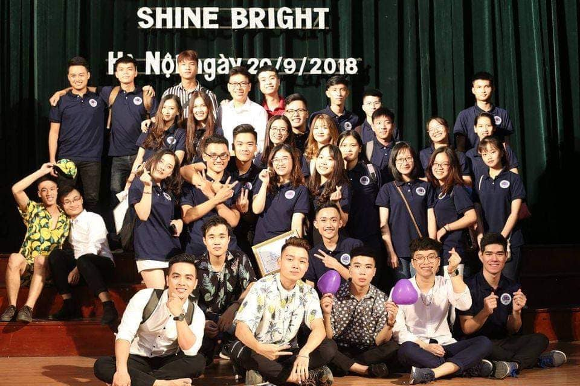Khoa Kinh Tế
Nếu bạn mong muốn được tìm hiểu sâu về kinh tế cả về kiến thức lẫn kinh nghiệm làm việc, hoạt động thì Khoa Kinh Tế chính là nơi bạn không thể bỏ qua.
Facebook: Khoa Kinh tế - Học viện Ngân hàngKhoa Ngoại Ngữ
Đến với Khoa Ngoại Ngữ, các bạn sinh viên có cơ hội được đào tạo chuyên sâu về tiếng Anh với mục tiêu đầu ra sẽ đạt ít nhất IELTS 6.0; ngoài ra thành viên của Khoa còn được đào tạo nghiệp vụ tài chính ngân hàng bằng tiếng Anh.
Facebook: Khoa Ngoại Ngữ Học Viện Ngân Hàng 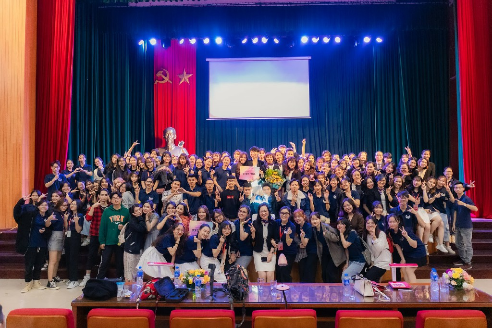Khoa Hệ Thống Thông Tin Quản Lý (MIS)
Là một trong những khoa chuyên ngành mới, sinh viên tham gia có cơ hội được giảng dạy, đào tạo và nghiên cứu khoa học trong lĩnh vực Hệ thống thông tin kinh tế.
Facebook: Khoa Hệ thống thông tin quản lý - Học viện Ngân hàng 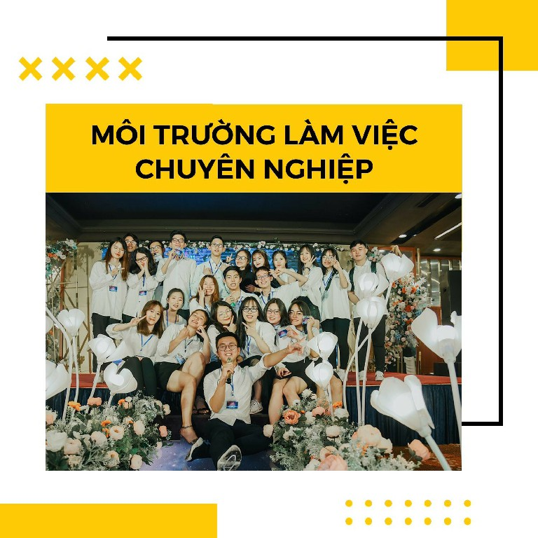Quy trình tham gia các CLB
1.Lịch tuyển cộng tác viên định kỳ 2 lần / năm:
- Kỳ 1: khoảng tháng 10
- Kỳ 2: khoảng tháng 3
2. Các bước tham gia:
- Bước 1: Điền đơn theo link (online - kế hoạch trên Hội Sinh viên Học viện Ngân Hàng) hoặc lấy đơn ở bàn đặt truyền thông (offline).
- Bước 2: CLB thực hiện tuyển chọn theo các tiêu chí, sau đó thông báo phỏng vấn CTV đã vượt qua vòng đơn.
- Bước 3: Thông báo kết quả tuyển thành viên qua các kênh thông tin
3. Nguyện vọng thành lập CLB:
- Bước 1: Trao đổi với Ban Thư ký Hội Sinh viên về vấn đề thành lập CLB.
- Bước 2: Xây dựng bộ hồ sơ thành lập CLB (dựa trên hỗ trợ từ Blue Wings).
- Bước 3: Bắt đầu hoạt động chính thức (nếu được phê duyệt hồ sơ thành lập từ Ban Giám đốc và Hội Sinh viên).
Đăng bởi Ngoc Duc
tham khảo thông tin từ
Sinh viên Học Viện Ngân Hàng
.